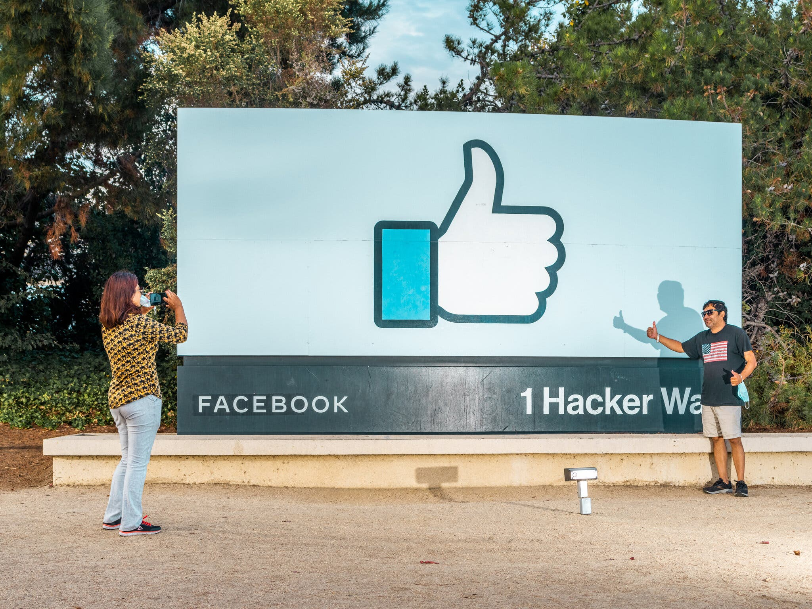

To understand the new smart watched and other pro devices of recent focus, we should look to Silicon Valley and the quantified movement. Apple’s Watch records exercise, tracks our moves throughout the day, checks the amount of time we are stood up and reminds us to get up and move around if we have been sat for too long – let’s not forget Tim Cooks “sitting is the new coolness” line. To its detractors, love at first sight must be an illusion – the wrong term for what is simply infatuation, or a way to sugarcoat lust